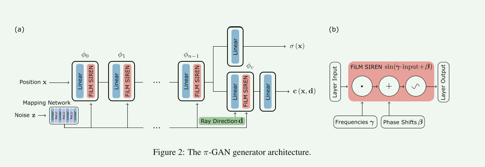
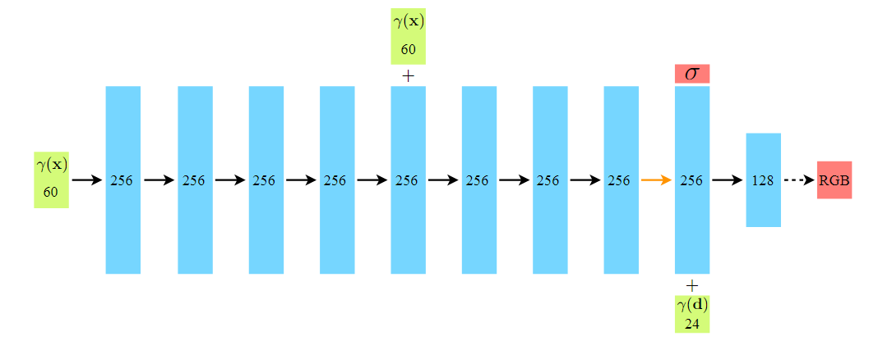
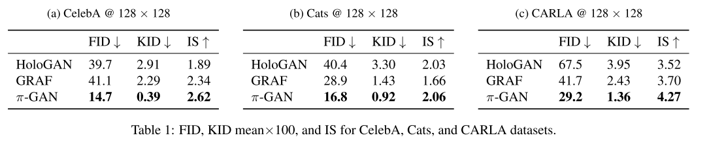

pi-GAN_ Periodic Implicit Generative Adversarial Networks for 3D-Aware
pi-GAN: Periodic Implicit Generative Adversarial Networks for 3D-Aware
1 提出的方法，贡献，相关工作
1. 方法
所提出的方法利用==基于SIREN==的神经辐射场表示来鼓励多视图一致性，从而允许从较宽的范围进行渲染相机姿势范围并提供可解释的 3D 结构。 SIREN隐式场景表示利用周期性激活函数，比ReLU隐式表示更能表示精细细节，并使π-GAN能够渲染比以前的工作更清晰的图像。
使用映射网络通过==特征线性调制FiLM==来调节SIREN中的层。这一方法可以更广泛地应用于GAN之外的SIREN架构。其次，受2D卷积GAN先前成功的启发，引入了==渐进式增长策略==，以加速训练并抵消 3D GAN 增加的计算复杂性。
2. 贡献
- 引入基于 SIREN 的隐式 GAN 作为卷积 GAN 架构的可行替代方案。
- 提出了一个以 FiLM 调节和渐进式增长判别器作为关键组件的映射网络，以通过我们新颖的基于 SIREN 的隐式 GAN 实现高质量结果。
- 证明视图一致性和显式相机控制是依赖于底层神经辐射场表示和经典渲染的方法的优势。
- 根据 CelebA 、Cats 和 CARLA 数据集上的无监督 2D 数据进行 3D 感知图像合成，取得了最先进的结果。
2 方法 & 模型
1. Overview:

相比于直接从输入的noise, z生成2D图像，π-GAN的生成器 \(G_{θG} (z, \xi)\) 产生一个以 z 为条件的隐式辐射场。该辐射场是使用体积渲染来渲染的，以根据某个相机姿势 \(\xi\) 生成 2D 图像。
2. SIREN-Based Implicit Radiance Field
使用隐式神经辐射场(SIREN)表示3D对象，该神经辐射场被参数化为多层感知机(MLP)，输入为空间3D坐标 x 和视图方向 d；输出为密度 \(\sigma\) 以及视图相关颜色 \((r, g,b)=c(x,d)\)。然后，利用StyleGAN的映射网络，通过FiLM将SIREN调节到早上向量 z 上。而映射网络采用简单的ReLU MLP，输入为噪声向量 z 输出为频率 \(\gamma_i\) 和相移 \(\beta_i\) ，做为FiLM SIREN的输入。
优势：这种插入的映射网络相比基于串联的调节更具有表现力，提高了图像质量。
FiLM：feature-wise linear modulation(特征线性调制)
将FiLM SIREN 骨干网络形式化表示为： \[ \begin{aligned} \Phi(\mathbf{x})= & \phi_{n-1} \circ \phi_{n-2} \circ \ldots \circ \phi_{0}(\mathbf{x}), \\ & \phi_{i}\left(\mathbf{x}_{i}\right)=\sin \left(\boldsymbol{\gamma}_{i} \cdot\left(\mathbf{W}_{i} \mathbf{x}_{i}+\mathbf{b}_{i}\right)+\boldsymbol{\beta}_{i}\right), \end{aligned} \] 其中，\(\phi_{i}\) 为MLP的第 i 层，它由一个仿射变换定义，包括权重矩阵 \(W_i\) 和偏置 \(b_i\) 组成，同时作用于输入 \(x_i\)。
将隐式体积密度和颜色定义为： \[ \begin{aligned} \sigma(\mathbf{x}) & =\mathbf{W}_{\sigma} \Phi(\mathbf{x})+\mathbf{b}_{\sigma} \end{aligned} \]
\[ \begin{aligned} \mathbf{c}(\mathbf{x}, \mathbf{d}) & =\mathbf{W}_{c} \phi_{c}\left([\Phi(\mathbf{x}), \mathbf{d}]^{T}\right)+\mathbf{b}_{c} \end{aligned} \]
其中，\(\mathbf{W}_{\sigma/c}\) 和 \(b_{\sigma/c}\) 为额外的权重和偏差参数。
==NeRF的MLP网络：==

原始的NeRF它的MLP网络为8层，都是使用的ReLU激活函数；然后一个额外特征层输出 \(\sigma\) ，一个特征层输出 RGB 信息。而 pi-gan 提出的网络通过FiLM 调制，在每个层的后面把 SIREN 加进去，得到一个新的 MLP 网络，从而提高图像质量。
SIREN网络是指一个用于表示辐射场的神经网络。SIREN(Sinusoidal Representation Networks)，它是一种特殊类型的神经网络结构。这种网络使用周期性的正弦激活函数，通常被用于表示连续的函数或场景中的信号。
3. Discriminator
采用参数为 \(\theta_{D}\) 逐渐增长的卷积判别器 \(D_{\theta{D}}\) ，开始训练时，采用低分率和高批量大小进行训练，生成器生成粗糙的形状。随着训练的进行，提高图像分辨率并向鉴别器添加新层以处理更高分辨率并区分精细细节。
由于计算复杂性随着图像大小呈二次方增长，因此从低分辨率开始的渐进式增长允许在训练开始时使用更大的批量大小。大批量有助于稳定训练，同时还可以提高每次迭代的图像吞吐量。渐进式增长及其支持的更大批量大小有助于确保生成图像的质量和多样性。
PS：神经渲染采用与 NeRF 相同的渲染公式。
3 实验 & 分析
1. 训练
在训练时，从分布 \(p_{\xi}\) 中随机采样相机姿势 \(\xi\) 。每个数据集的姿势分布都是先验已知的，对于 CelebA 和 Cats 近似为高斯分布，对于 CARLA 近似为均匀分布。==将相机位置限制在单位球体的表面，并将相机指向原点==。在训练时，沿球体的俯仰和偏航是从根据数据集调整的分布中采样的。真实图像 I 是从具有分布 \(p_{I}\) 的训练集中采样的。使用带有 R1 正则化的非饱和 GAN 损失函数： \[ \mathcal{L}(\theta , \phi ) = E_{z \sim p_{z, ~ \xi \sim p_{\xi}}}[f(D_{\theta G}G_{\theta G}(z, \xi)] ~ + ~ E_{I\sim p_{D}}[f(-D_{\theta D}(I)) + \lambda |\bigtriangledown D_{\theta D}(I)|^2], \\ where \quad f(u) = -log(1+exp(-u)) \] 生成器尝试最小化等式，而判别器同时尝试最大化等式。使用 Adam 优化器，β1 = 0，β2 = 0.9。
2. 结果对比
Baseline: HoloGAN, Generative Radiance Fields(GRAF)

评价指标: Frechet Inception Distance(FID), Kernel Incerption Distance(KID), Inception Score
3. 消融实验
对==正弦激活==和==映射网络调节==进行消融，来体现它们在网络中的作用。将==正弦激活==的辐射场与==ReLU激活==和位置编码的辐射场进行比较。将通过==映射网络和FiLM条件调节==的辐射场与通过==级联调节==的辐射场进行比较。